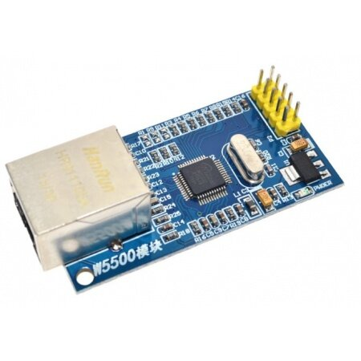

|
|
 РЕКЛАМА mcustore.ru | ||||
|
|
|
Git: Как исправить HEAD detached from |
Время создания: 11.10.2014 10:55
Текстовые метки: git, HEAD, detached, status
Раздел: Компьютер - Программирование - Системы контроля версий (VCS) - Git
Запись: xintrea/mytetra_syncro/master/base/1413010541a7d8hww8g7/text.html на raw.github.com
|
|
При работе с Git может возникнуть такая ситуация: команда git push не заливает изменения на сервер, а команда git status показывает:
$ git status
HEAD detached from 87dc87b
Это может означать, что вы делали какую-то навигацию по истории коммитов, и неправильно вернулись к последнему коммиту.
Исправить эту проблему можно 4-мя командами:
git branch temp
git checkout temp
git branch -f master temp
git checkout master
И, опционально,
git branch -d temp
Что при этом происходит:
1. создаем временную ветку с именем temp, причем в новой ветке будет правильно установлено положение HEAD
2. переключаемся на временную ветку temp
3. в ветке master устанавливается та же позиция HEAD, что и в ветке temp
4. переключиться на ветку master
И опционально:
5. удалить временную ветку
Еще один вариант, короткий
git checkout имяВеткиГдеВыНаходитесь
- эта команда переключит проект в последний коммит текущей ветки. Точнее, в состоянии detached head, проект не находится ни в какой ветке. git checkout branchname просто переключит проект на последний коммит той ветки, которая указана. Это значит, что до появления ошибки нужно знать, в какой ветке ты находишься. Для того чтобы посмотреть, где находился, можно воспользоваться командой:
git reflog
Самый правильный вариант
git checkout HEAD@{1}
Так же в этом разделе:
- Бесплатные сервиса размещения репозитариев Git
- Git workflow - Теория
- Git workflow - Краткое введение по основным инструкциям
- Git Wizardry
- Про Git на пальцах (для переходящих с SVN)
- Git на двоих
- Ежедневный Git
- Удачная модель ветвления для Git
- Синхронизация через GIT
- Git stash - работа с "карманом" в Git
- Как посмотреть настройки репозитария Git и как их изменить
- GIT: Инструкция-шпаргалка для начинающих
- Как перенести локальный GIT-репозитарий на сервер вместе со всей историей
- git reset — возврат к определенному коммиту, откат изменений, «жесткий» или «мягкий»
- git revert — отмена изменений, произведенных в прошлом отдельным коммитом
- Git - работа с ветками
- Git: Путь Github. Цикл разработки - Простое объяснение
- Машина времени в GIT
- Git Rebase: руководство по использованию
- Git: просмотр лога (истории) в консоли в виде дерева
- Git: понимание команды git merge
- Git: Опции слияния для команд merge и pull - определение стратегии слияния
- Git: как переключиться на нужный коммит
- Git: как смержить изменения из experimental в master
- Git: как посмотреть изменения, внесенные определенным коммитом
- Git: как посмотреть историю изменения одного файла
- Git: как вернуть один файл в состояние, которое было в определенном коммите
- git log - особенности данной команды при навигации по истории через git checkout
- Git: Как исправить HEAD detached from
- Git: что делать в состоянии detached head
- Работа в команде с использованием Git на примере проекта в среде Blender 3D
- Git: Как внести изменения в последний коммит
- Как в Git создать новую ветку в условиях, когда что-то уже было изменено после последнего коммита
- Как в Git залить новую локальную ветку в удаленный репозитарий
- Git: Как подключить новую ветку с удаленного сервера
- Git: Как узнать текущую ветку
- Git: В чем разница между Fetch и Pull?
- GIT: Как исправить ошибочный комментарий к коммиту или файлы в коммите
- Как настроить git на использование proxy-сервера
- Использование Git через HTTP-proxy
- Настройка работы Git через Proxy-сервер
- Git через proxy
- Использование git за прокси с аутентификацией
- Что делать, если в России заблокирован GitHub - быстрое решение
- Как в Git смержить изменения до конкретного коммита?
- Самый удобный визуальный клиент Git под основные платформы - SmartGit
- Основы системы управления версиями Git для новичков на примере SmartGit
- Как сделать подключение к репозитарию Git через Socks Proxy в условиях отсутствия DNS
- Как сделать подключение к репозитарию Git через проксирующее SSH соединение
- Как работать с незавершенными изменениями в коде? Как их коммитить в Git?
- Как в Git посмотреть незакоммиченные изменения в текстах исходников?
- Как поместить на GitHub уже существующий репозитарий
- Что происходит при откате изменений через git reset --soft
- Не бойся хардресета! Он твой друг и помощник. (Как пользоваться git reset)
- Как пометить определенный коммит тегом версии
- Как в Git удалить файлы из индекса, не удаляя их в рабочей директории
- Как настроить GIT, чтобы при конфликте слияния он прописывал в файл не только различия, но и "базу" этих различий
- Git: Разрешение конфликтов объединений
- Git: Извлечение старой версии файла
- Git stash: временный отказ от проделанной работы
- Git: проверка состояния репозитария, поддержание репозитария в рабочем состоянии
- Как в Git отменить локальные изменения и получить новое состояние из удаленного репозитария
- Как искать изменения в нужных файлах с помощью интерфейса gitk?
- Как выбрать одну из версий бинарного файла при возникновнии конфликта слияния?
- Как в Git посмотреть старый коммит, а потом вернуться обатно к самому последнему коммиту
- Получение хеша последнего коммита и его даты в Git (для версионирования)
- Памятка по неочевидным деталям использования Git
- Как синхронизировать форк на Github с основным репозитарием через веб-интерфейс
- Как пользоваться GitHUb: форки, ветки, запросы на добавление кода
- Как отменить (сбросить) еще не закоммиченные изменения в Git
- Первоначальная настройка имени пользователя и Email в Git-проекте
- Можно ли принимать изменения через git pull если не закоммичены изменения рабочей директории
- Как посмотреть какие команды генерирует git gui
- Как удалить файл в Git-репозитарии с изменением истории